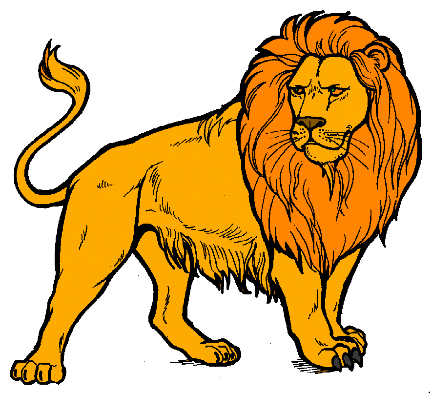

LION
The lion is a species in the family Felidae; it is a muscular, deep-chested cat with a short, rounded head, a reduced neck and round ears, and a hairy tuft at the end of its tail. It is sexually dimorphic; adult male lions have a prominent mane, which is the most recognisable feature of the species.
- Lifespan: 10 – 14 years (Adult, In the wild)
- Family: Felidae
- Scientific name: Panthera leo
- Height: Male: 1.2 m (Adult, At Shoulder), Female: 1.1 m (Adult, At Shoulder)
Lions are unique among cats in that they live in a group, or pride. The members of a pride typically spend the day in several scattered groups that may unite to hunt or share a meal. A pride consists of several generations of lionesses, some of which are related, a smaller number of breeding males, and their cubs.